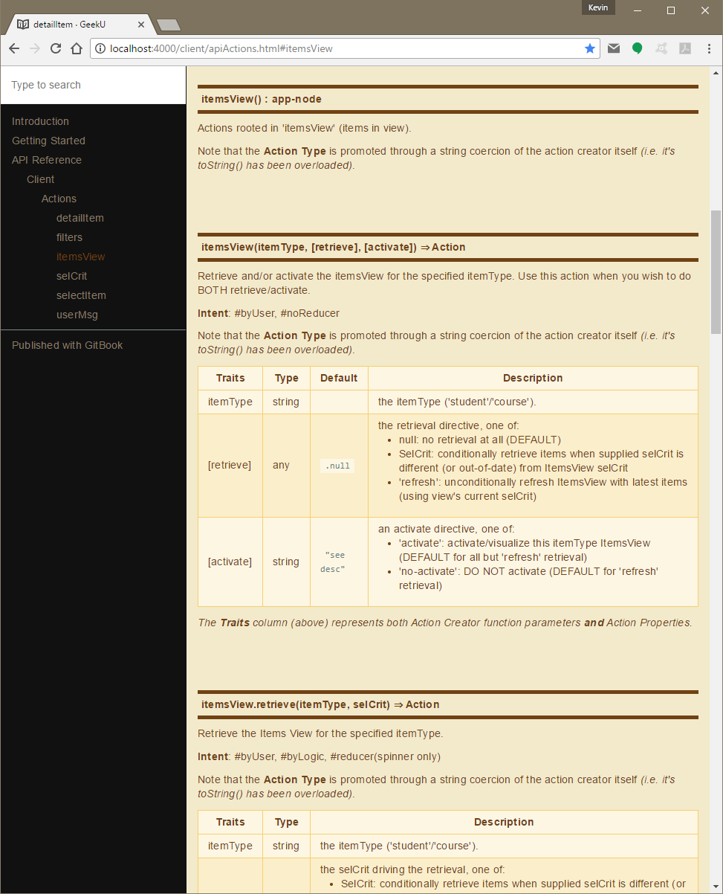

Action Documentation
In order to gain a a better understanding of any reactive application, it is important to fully understand it's emitted actions.
One of the goals of action-u is to implicitly promote intuitive
meaning to your actions through the shape of your
ActionStruct.
Description
It is not uncommon to provide a short description for each action, "explainin' what each one was, to be used as evidence against us" (Alice's Restaurant). This provides additional context to better understand each action.
Here is an example from my GeekU sandbox application:
actions/itemsView.js
export default generateActions.root({ itemsView: { // itemsView(itemType, [retriee], [activate]): Action // ... retrieve and/or activate the itemsView for the specified itemType // INTENT: #byUser, #noReducer actionMeta: { traits: ['itemType', 'retrieve', 'activate'], ratify(itemType, retrieve=null, activate=retrieve!=='refresh' ? 'activate' : 'no-activate') { assert(itemTypes[itemType], `actions.itemsView() Invalid itemType param: ${FMT(itemType)}`); assert(retrieve === null || retrieve === 'refresh' || SelCrit.isSelCrit(retrieve), `actions.itemsView() Invalid retrieve param: ${FMT(retrieve)}`); assert(activate === 'activate' || activate === 'no-activate', `actions.itemsView() Invalid activate param: ${FMT(activate)}`); return [itemType, retrieve, activate]; }, }, retrieve: { // itemsView.retrieve(itemType, selCrit): Action // ... retrieve the itemsView for the specified itemType // INTENT: #byUser, #byLogic, #reducer(spinner only) actionMeta: { traits: ['itemType', 'selCrit'], ratify(itemType, selCrit) { assert(itemTypes[itemType], `actions.itemsView.retrieve() Invalid itemType param: ${FMT(itemType)}`); assert(selCrit === 'refresh' || SelCrit.isSelCrit(selCrit), `actions.itemsView.retrieve() Invalid selCrit param: ${FMT(selCrit)}`); return [itemType, selCrit]; }, }, complete: { // itemsView.retrieve.complete(itemType, selCrit, items): Action // ... retrieval completed of items for the temsView // INTENT: #byLogic, #reducer actionMeta: { traits: ['itemType', 'selCrit', 'items'], }, }, fail: { // itemsView.retrieve.fail(itemType, selCrit, err): Action // ... retrieval failed of items for the temsView // INTENT: #byLogic, #reducer(spinner only) actionMeta: { traits: ['itemType', 'selCrit', 'err'], }, }, }, activate: { // itemsView.activate(itemType): Action // ... activate the itemsView for the specified itemType // INTENT: #byUser, #byLogic, #reducer actionMeta: { traits: ['itemType'], }, }, } });
Intent
Quite often it is helpful to promote the intent of each action. As an example, you may have actions that are exclusively intended to be used internally (say by a logic module), and therefore are of no interest to a reducer. This is especially useful when using a dedicated logic framework - such as redux-logic (I highly recommend this utility)!
To that end, I utilize the following hash-tags to further document each action:
#byUser: dispatched by a user action (i.e. initiated directly from UI) #byLogic: dispatched by app logic (i.e. sourced from other actions) #reducer: of interest to a reducer (i.e. state should change as a result) #noReducer: of NO real interest to reducer (i.e. used to stimulate logic)Here is a concrete note from my GeekU sandbox application:
As an example, the
selCrit.saveaction is of no interest to reducers (#noReducer) because application logic monitoring this action will emit a more general action 'selCrit.changed' which provides a more central opportunity to maintain our state (#byLogic, #reducer).You can see these tags in use, in the example (above).
JavaDoc
If you are "into" JSDoc (a descendant of JavaDoc), you can apply more formal documentation to your actions.
Here is the same example (from above) embellished with JavaDocs:
The following code snippet:
/** * @constant {app-node} 'itemsView' * @function * @description Actions rooted in 'itemsView' (items in view). */ export default generateActions.root({ /** * @function 'itemsView' * * @description * Retrieve and/or activate the itemsView for the specified * itemType. Use this action when you wish to do BOTH * retrieve/activate. * * @intent #byUser, #noReducer * * @param {string} itemType the itemType ('student'/'course'). * * @param {any} [retrieve=.null] the retrieval directive, one of: * <ul> * <li> null: no retrieval at all (DEFAULT)</li> * <li> SelCrit: conditionally retrieve items when supplied selCrit is different (or out-of-date) from ItemsView selCrit</li> * <li> 'refresh': unconditionally refresh ItemsView with latest items (using view's current selCrit)</li> * </ul> * * @param {string} [activate=see desc]: an activate directive, one of: * <ul> * <li> 'activate': activate/visualize this itemType ItemsView (DEFAULT for all but 'refresh' retrieval)</li> * <li> 'no-activate': DO NOT activate (DEFAULT for 'refresh' retrieval)</li> * </ul> * * @return {Action} */ itemsView: { actionMeta: { traits: ['itemType', 'retrieve', 'activate'], ratify(itemType, retrieve=null, activate=retrieve!=='refresh' ? 'activate' : 'no-activate') { assert(itemTypes[itemType], `actions.itemsView() Invalid itemType param: ${FMT(itemType)}`); assert(retrieve === null || retrieve === 'refresh' || SelCrit.isSelCrit(retrieve), `actions.itemsView() Invalid retrieve param: ${FMT(retrieve)}`); assert(activate === 'activate' || activate === 'no-activate', `actions.itemsView() Invalid activate param: ${FMT(activate)}`); return [itemType, retrieve, activate]; } }, ... snip snip } });Yields the following nicely formatted API Docs:

This was accomplished by integrating two technologies: GitBook, and JSDoc, documented here: Integrating GitBook with JSDoc to Document Your Open Source Project.